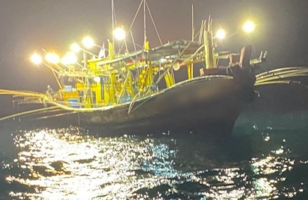
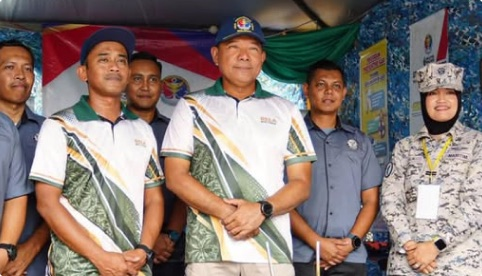
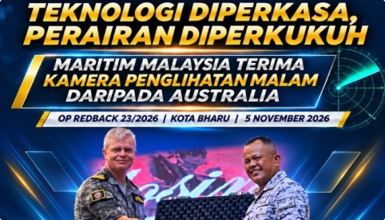
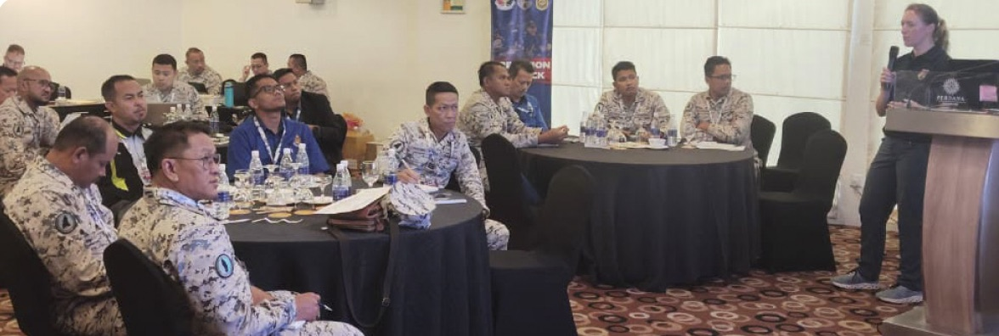
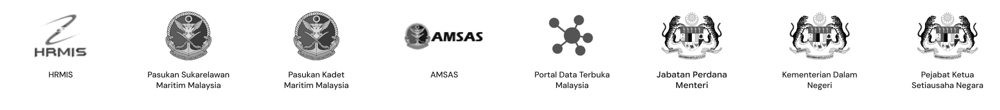
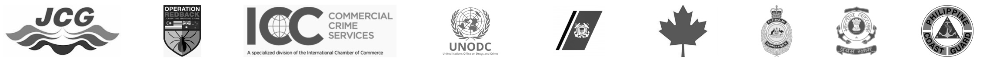

01Tender dan Sebut Harga

03-8995 7208 · 019-261 1833
999Ibu Pejabat & Maritim Negeri
Aras 4-12, One IOI Square, IOI Resort, 62502 Putrajaya
03-8995 7000
APMM melindungi perairan negara melalui penguatkuasaan undang-undang, operasi mencari dan menyelamat serta kerjasama antarabangsa.



Muat turun aplikasi rasmi APMM untuk aduan dan bantuan kecemasan di laut.
Baca Lanjut
Berita Pilihan | Ketua Pengarah Maritim Malaysia hadiri Program Sambutan Hari Bersama Media 2026
Ikuti Kami
Berita Pilihan | Ketua Pengarah Maritim Malaysia hadiri Program Sambutan Hari Bersama Media 2026
Ikuti Kami
Teknologi Diperkasa, Perairan Diperkukuh! Maritim Malaysia terima kamera penglihatan malam daripada Australia
Ikuti KamiPementasan Teater Maritim Malaysia: DEMI SATU NYAWA
Ikuti Kami
KOTA BHARU, 2 November - Bengkel OP REDBACK 23, hari pertama semalam telah membuka tirai dengan pengisian yang memberi tumpuan kepada teknik latihan komprehensif mengenai perisikan...
Bersama agensi kerajaan dan rakan antarabangsa dalam menjaga perairan negara.


Beroperasi 24 jam, 7 hari seminggu
999 03-8995 7208019-261 1833MERS 999 — Talian Kecemasan